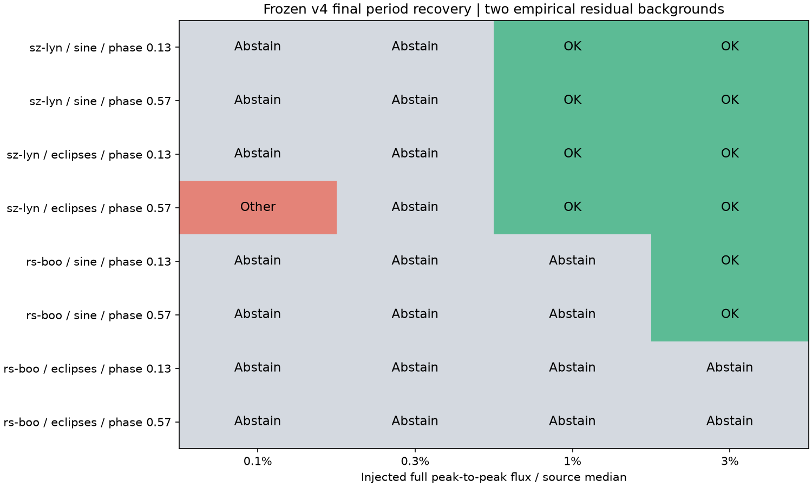
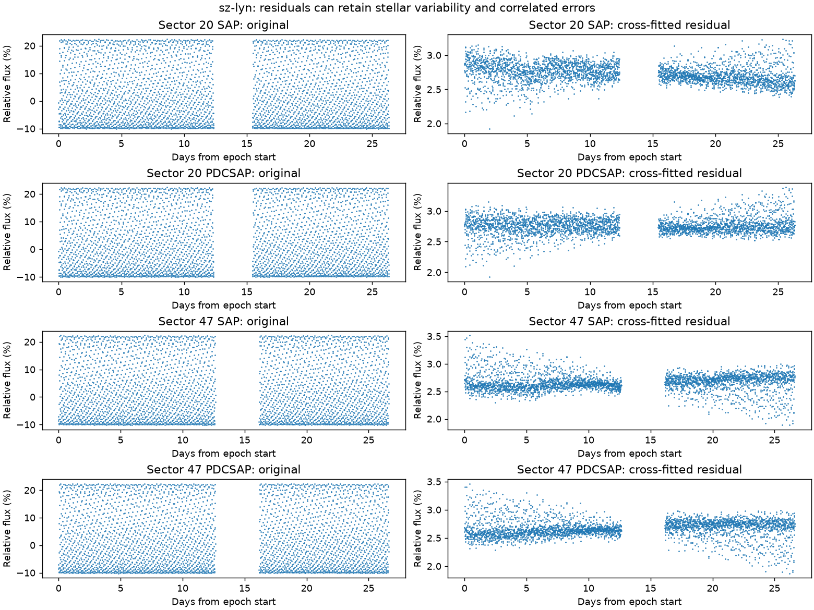
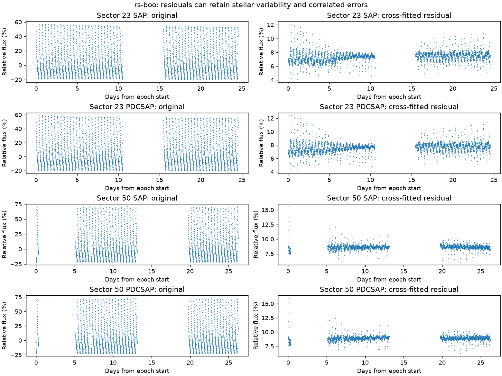

从旧开发样本扣除主要周期，留下实测起伏，再加入已知信号。共有两颗背景星、32 个注入案例和 2 个零注入。它们不是 34 颗独立恒星，也不是已证明不变的反例。
幅度是亮度最高与最低的全差，占源通量中位数的比例。OK 表示最终周期在注入真值的 1% 内；Abstain 表示没有选择最终周期；Other 表示选择了其他周期。没有选择不等于没有变化。

| 信号 | 全幅度 | 最终选对 | 两时段都有真值附近合格候选 |
|---|---|---|---|
| 平滑起伏 | 0.1% | 0/4 | 0/4 |
| 平滑起伏 | 0.3% | 0/4 | 2/4 |
| 平滑起伏 | 1.0% | 2/4 | 2/4 |
| 平滑起伏 | 3.0% | 4/4 | 4/4 |
| 深浅不等的食 | 0.1% | 0/4 | 0/4 |
| 深浅不等的食 | 0.3% | 0/4 | 0/4 |
| 深浅不等的食 | 1.0% | 2/4 | 2/4 |
| 深浅不等的食 | 3.0% | 2/4 | 3/4 |
“合格候选”要求至少一种产品在两个时段都有注入周期附近的合格候选，仍可能有竞争周期。某个幅度恢复良好不代表所有周期、所有恒星都能达到。
背景来自真实变星的残差，可能还有原星变化；以上结果不能叫作真实安静星误报或正确拒绝。


注入发生在 SAP/PDCSAP 已处理通量上，不检验上游像素提取、PDC 校正或来源定位。数据不能支持总体准确率、误报率、发现概率或 VSX 投稿。完整评分 · 评分前预测 · 冻结方案